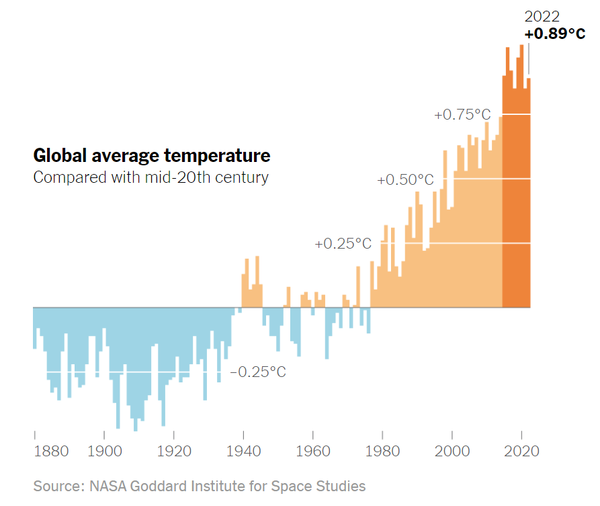
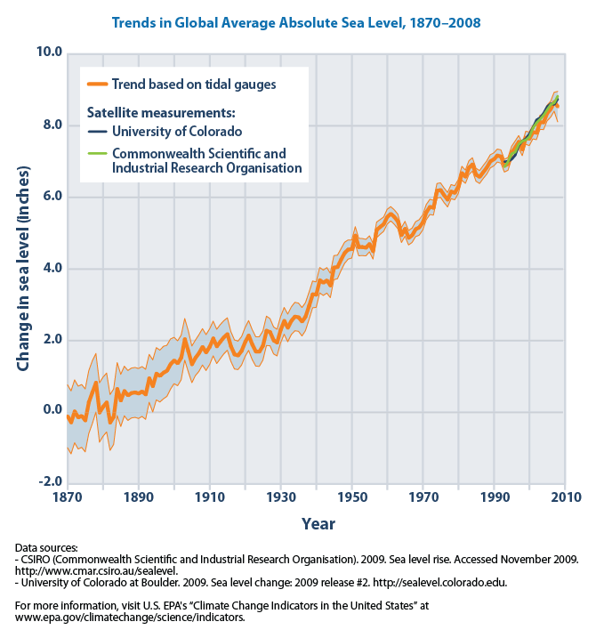

Climate Change
“Climate change is real. It is happening right now, it is the most urgent threat facing our entire species and we need to work collectively together and stop procrastinating.” - Leonardo DiCaprio
“Climate change is real. It is happening right now, it is the most urgent threat facing our entire species and we need to work collectively together and stop procrastinating.” - Leonardo DiCaprio
The Earth's temperature has increased by 1.1℃ since 1880 (NASA Earth Observatory). Although this does not seem like a big deal, it is. Firstly a majority of this increase has been since 1975. Since 1975 the Earth has increased by an average of 0.2℃ every decade (NASA Earth Observatory).
Figure 1: Graph of Increasing Temperature Since 1880 (The Learning Network)
There are several reasons why this minimal increase is cause for concern. Firstly there is a significant effect on crops and agriculture across Africa and Asia. The increased temperature causes droughts and unordinary rainfall patterns. In 2020 alone, Africa experienced a fifty percent decline in agriculture production (United Nations). Approximately two-hundred million people will be affected in Africa and another one-hundred-fifty million in Asia (United Nations). Another terrible effect this increased temperature will have is the spread of disease. With increased temperatures comes a more substantial number of mosquitos. Mosquitos are excellent at spreading disease. Some countries affected by this are the United States and the United Kingdom. The United States saw an increasing number of malaria cases in the early 2000s, and the United Kingdom saw a rising number of legionnaires' diseases (United Nations). With global temperatures rising comes an increased number of insect-born conditions.
The primary cause of this rising temperature is increased carbon dioxide in the Earth's atmosphere (Fecht).
The other major cause for concern is Earth's rising sea levels. Sea levels have risen about ninety-seven millimeters since 1997 (Change). Again this does not seem like a substantial number, but it is.
Figure 2: Graph of Rising Sea Levels Since 1870 (Climate Connection: Sea Level Rise | manoa.hawaii.edu/ExploringOurFluidEarth)
The effects if this continues can be detrimental. For example, storms and floods will increase enormously, especially near coastlines (Sea Level Rise). Thousands of animals could go extinct and interrupt ecosystems humans rely on for supplies and food. Also, thousands of people will have to relocate as many major cities lie on coastlines (Sea Level Rise). States like Florida and New York are already experiencing these effects (Sea Level Rise).
This video by National Geographic is an excellent summary of the causes and effects of climate change. It's a great watch for those who prefer to spend less time watching hours of videos to get informed. This five-minute video is excellent at summarizing essential parts of climate change. Feel free to check out this video and more on National Geographic's Youtube Channel by clicking this link.
If you have more time, I recommend this documentary by Welt Documentary. It goes into each topic in-depth and even lists potential solutions. If you like a documentary that gets you thinking and have some extra time, this is the one for you. You can watch it here or on Welt's Youtube channel here.
If you want the best of both worlds, this crash course video is for you. It's only about twelve minutes long and very informative. Feel free to check out this video on the Youtube link here.
The Clean Air Task Force's primary goal is to reduce air pollution. The organization has already successfully reduced pollution by helping establish diesel, shipping, and methane emissions regulations. Their research is also top-notch research that targets areas of climate change that might be outside the public's primary focus. If you would like to donate, check out the link above.
This informational website is by the World Health Organization. It provides helpful facts and more information about climate change.
Feel free to contact me here anytime about any inquiries you might have.
Email: protectingplanetearth2023@gmail.com